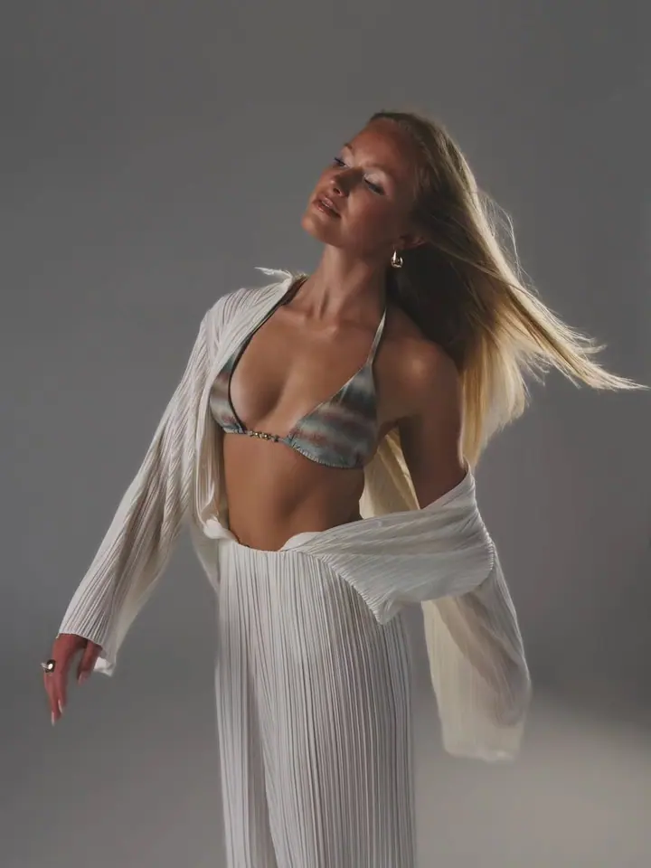
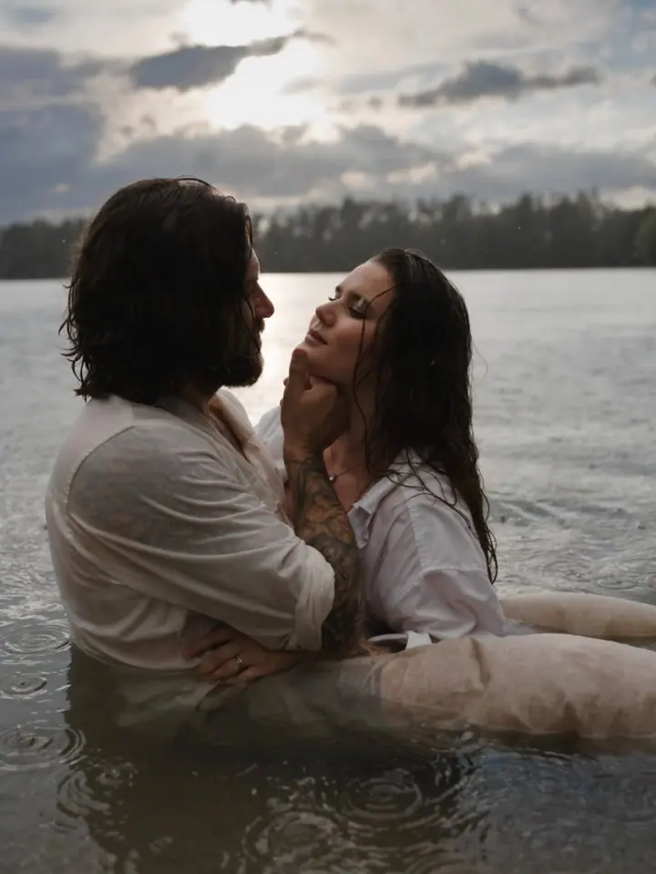

Portrétní focení
Portréty ve studiu i v exteriéru pro ženy, klidně i pro páry. Přirozené fotky, které ukážou vaši osobnost a energii okamžiku.

Portrétní a lifestylová fotografka
Jmenuji se Tereza Buchalová a jsem portrétní a lifestylová fotografka z Pardubic. Fotím hlavně ve svém ateliéru Studio 22 a v mém portfoliu nenajdete profi modelky, jen skutečné lidi. Pokud se neradi fotíte, poradím vám s pózou, oblečením i výrazem.
Zeptat se na termín
Portréty ve studiu i v exteriéru pro ženy, klidně i pro páry. Přirozené fotky, které ukážou vaši osobnost a energii okamžiku.
Intimní a smyslné fotografie, které oslavují ženskou krásu i sílu. Ve verzi delux s make-upem, úpravou vlasů a kávou nebo proseccem.
Rodinné focení v Pardubicích a okolí. Autentické fotky plné emocí, dětského smíchu a společných chvil.
Fotografie mě fascinuje už od malička a lidi fotím patnáct let. Mám vlastní ateliér Studio 22 v centru Pardubic, ale ráda za vámi přijedu i domů, do firmy nebo na vaše oblíbené místo v přírodě. Specializuji se na černobílou fotografii, barevné varianty ale v portfoliu najdete také.
Nejdůležitější je pro mě, abyste se při focení cítili dobře. Klidně mi řekněte, z čeho máte obavy a co se vám na sobě nelíbí. Každou fotku vám hned ukážu a každý detail ladíme společně. Co nezvládneme na místě, doladím s citem při úpravách.
Absolvovala jsem řadu kurzů a workshopů, mimo jiné focení v přirozeném světle u Roberta Vana nebo pózování a svícení u Stanislava Petery. Jsem certifikovaná stylistka a imagemaker, od června 2020 ambasadorka Zoner Photo Studia a své zkušenosti dnes předávám i dalším fotografům na kurzech a mentoringu.
Napište mi nebo zavolejte. Řekneme si, jaké focení si představujete a z čeho máte případně obavy.
Poradím vám, co si vzít na sebe. Pokud chcete, zajistím i vizážistku, která vám udělá make-up a účes.
Fotíme v klidu ve Studiu 22 nebo venku. Každou fotku vám hned ukážu, takže výsledek ladíme společně.
Vyberete si fotky, které se vám líbí, a já je upravím včetně retuše. Úpravy postavy dělám jen po domluvě a s citem.
Určitě ano. Nikdo v mém portfoliu není profesionální model, všechno jsou to skuteční lidé. Při focení vám poradím, jak se postavit, co si obléknout i jak se tvářit.
Základní focení podle vašeho výběru (portrét, rodina, boudoir, těhotenské nebo business) stojí 3 950 Kč. Zahrnuje hodinu focení, pronájem studia a 8 upravených fotografií s retuší. Každá další fotka je za 400 Kč.
Profesionální make-up a styling vlasů, 1,5 až 2 hodiny focení, 10 fotografií s pokročilou retuší a kávu nebo prosecco. Cena je 7 850 Kč.
Většinou ve Studiu 22 v centru Pardubic, kde je v celém areálu parkování zdarma. Ráda ale přijedu i k vám domů, do firmy nebo do přírody. Doprava mimo Pardubice je za 10 Kč/km.